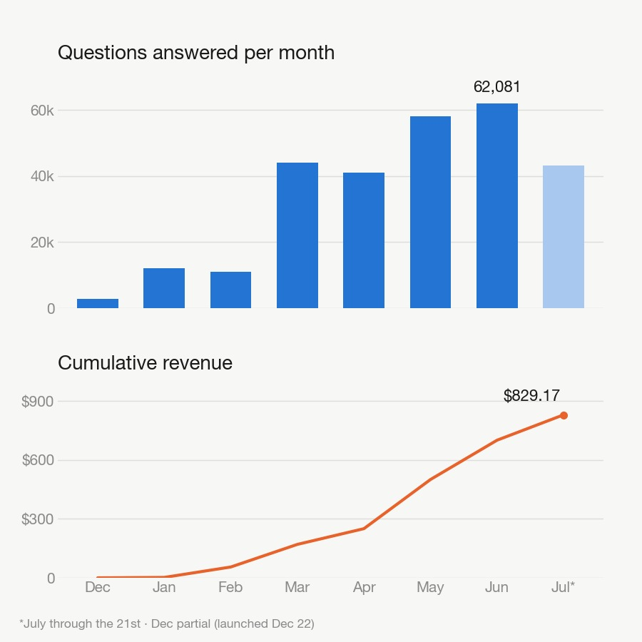
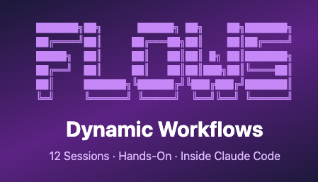
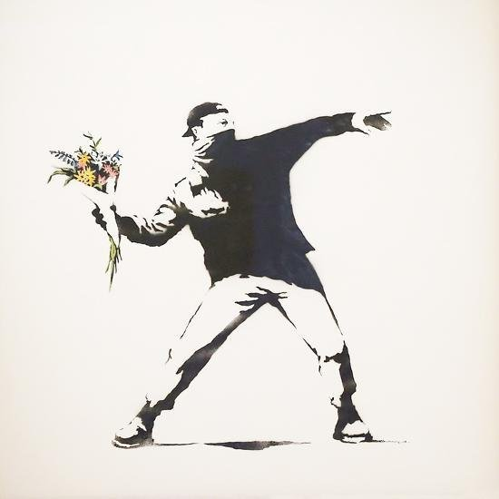
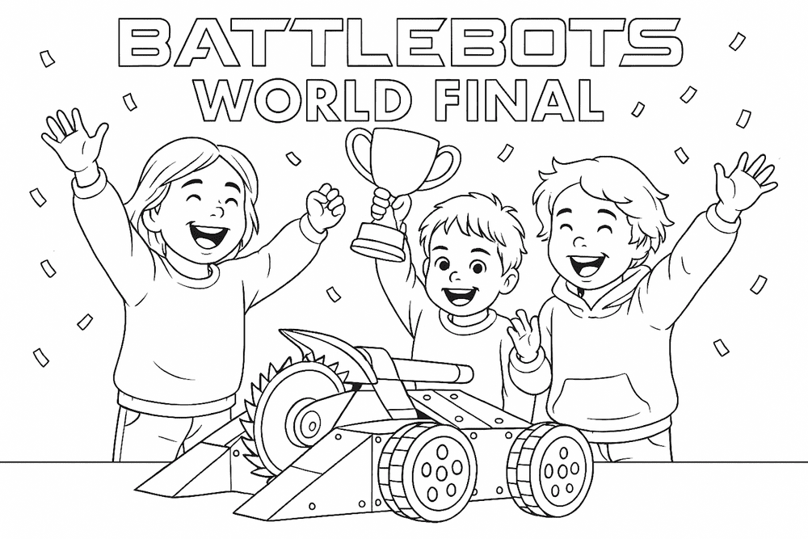
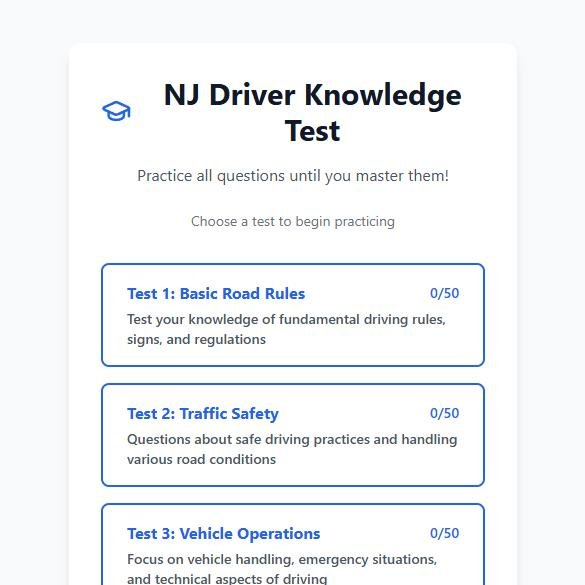
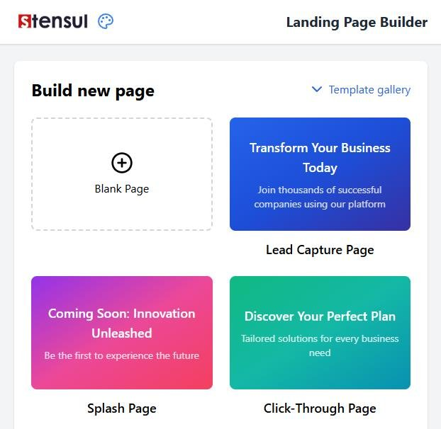

TigerTest: 7 months in
July 21, 2026

Seven months ago I launched TigerTest, a DMV practice test platform built entirely with Claude Code. Time for some real numbers.
9,480 people have used it. 278,478 practice questions answered. And the part that still feels a little unreal: 83 strangers have paid $9.99 to unlock the full thing. Total revenue to date: $829.17, straight from Stripe.
June alone saw 62,081 questions answered. Right now, somewhere, people are passing their driving tests because of an app I built on nights and weekends by describing what I wanted to an AI.
It's not quit-your-job money. But it's real money from a real product with real users, built by one person who doesn't write the code. Imagine where this goes next.
Play with the app
Learn Anything in Claude: Course Builder
June 3, 2026
I built a course factory for Claude Code.
I learn by doing, not by reading. Course Builder generates courses that work that way: every lesson is hands-on, every exercise runs on a real project you bring, and a Claude-powered instructor guides each session, checks your work, and grades your quizzes.
Give it a topic, source material, and an audience, and it builds the whole thing: lessons, quizzes, progress tracking, a deployable homepage. Learning by doing, on any subject, for anyone.
Try it: install the skill, pick a topic, and ask Claude to build the course.
Claude Code Workflows Course
June 3, 2026

I built a hands-on course for learning Claude Code workflows by actually using them.
Instead of reading about agent orchestration in theory, you work inside Claude Code, trigger real workflows, inspect the JavaScript harness Claude writes, and watch subagents split up the work.
The course has 12 sessions, short quizzes, and a capstone where you turn one of your own recurring tasks into a reusable workflow.
Try it if you want to understand when a task has outgrown a single Claude session, and how to use workflows without wasting compute.
Find out more
LLM-Wiki
April 5, 2026
Your call transcripts, emails, and docs contain more useful knowledge than you'll ever manually dig out. LLM-Wiki turns that raw material into a structured, queryable wiki — automatically.
Automate raw files in. Have Claude auto “compile” hourly. It updates articles, cross-links everything, and remembers what it's already processed. Ask questions, get sourced answers.
Inspired by Andrej Karpathy's LLM-as-compiler idea.
View on GitHub
Banksy Print Tracker
March 27, 2026

I built a Banksy Print Tracker site that lists upcoming and completed auction lots for original Banksy prints, with search by print name and the option to view prices in different currencies.
It updates automatically every day by checking major auction houses and a realized feed, then refreshes the live site so the data stays current without manual work.
Visit the site
AI PM Course
February 4, 2026
I built this course because I wanted to actually understand AI, not just use it. Most PM resources give you surface-level overviews, but I wanted to know how embeddings work, when to use RAG vs fine-tuning, and how to talk to engineers without faking it.
So I made a 25-session course that runs inside Claude Code. You learn by doing: Claude walks you through real exercises, and you bring your own product idea so every lesson applies to something you actually care about. By the end, you'll be able to prototype AI features yourself and have real technical conversations about architecture tradeoffs.
Try it: Install Claude Code, clone the repo, and say "Let's get started."
OpenClaw Q1 OKRs
January 31, 2026
I gave my @openclaw OKRs in Q1.
His main goal was to optimize my little DMV test prep site (tigertest.io) and increase the amount of users that take a practice test - as those users are more likely to give me $10 a month. His long term goal is to make $100k for an Optimus body.
Here is his Q1 OKR presentation (he created the deck and the audio) <3.
Imagine where this kind of thing will be in a year or two?
Ace-that-interview.com
January 18, 2026
I spent 2 days hacking with my brother and this is what fell out the other end.
Ace That Interview is an interview prep platform for job seekers targeting specific companies. Users search for roles like "Google PM interview prep" and land on tailored pages (e.g., /google/product-manager) with guided prep courses.
Key features: a modular content system (~20 modules combining to cover hundreds of company/role combinations), AI-generated content from public sources focused on interview psychology, and a story-based UX with progressive disclosure.
Business model: Testing freemium vs. ~$200 one-time paywall for company-specific content.
Play with the app
Tigertest.io
December 21, 2025
What started as a simple New Jersey DMV practice app for myself evolved into a full platform covering all 50 states.
Using Claude Code, I first updated and improved my original NJ app, then generated 2,000 state-specific questions to complement the existing question bank. From there, I built out TigerTest.io - a completely free practice test platform featuring mastery-based training, four practice tests per state, pass probability tracking, and full user accounts.
The entire product was built through AI-assisted development.
2 months after launch and the site has racked up over 50,000 questions being answered.
Play with the app
New Parent Qbank
December 15, 2025
A lightweight web app that presents a series of questions designed to help new or expecting parents reflect on their preferences, priorities, and readiness for parenthood. The interface guides users through each item in a simple, engaging format and then summarizes insights at the end to support self-reflection or discussion between partners.
I built this in a few hours with Claude Opus 4.5.
Play with the app
Family Colouring Book
April 2025

I decided to create my neice and nephews a coloring book using the latest gpt 4o image creation. With that you can upload a photo of a pesron - and then have it recreate them as a line drawing.
View book
Turret.fun
March 2025
A prototype for a website and an app for a game I am developing with my brother Pete.
I built all of this is 3-4 hours.
Play with the app
NJ Driving Knowledge test Qbank
February 2025

I moved to Jersey and decided to get my driving lisence. I just built this tool to help me pass the NJ Driving Knowledge test using bolt.new. It took me 4-5 hours.
I used ChatGPT and Claude to analyze the 223 page driving manual pdf and come up with 200 hard questions that I split into 4 practice tests. I then built this qbank app to help me master each question. I wrote 0 lines of code. Amazing!
UPDATE - I shared the app on reddit and it now has over 1200 users.
Play with the app
A rapid prototype for an interview
May 2024

I interviewed with Stensul and as part of the prcoess - they asked me to show how I would think through building a new landing page creation system.
UPDATE - I got the job.
This took me around 2 hours to put together:
Play with the app